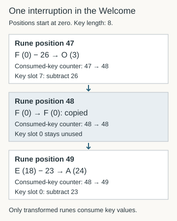

Vigenère on the rune alphabet
A repeating key supplies a shift at each consumed rune position.
On this page
Vigenère applies a repeating sequence of shifts. A single fixed shift treats every rune the same way; a repeating key lets the shift depend on the rune’s position in the key cycle. The known Welcome reading gives a concrete example using the 29-rune alphabet.
Specify direction and key
This wiki uses p = (c − k[j mod L]) mod 29, where L is key length and j counts consumed key positions. The welcome uses [23, 10, 1, 10, 9, 10, 16, 26], labeled DIVINITY. The second koan has its own key and interruption list in the parameters.
A walkthrough may express decryption as addition of complementary values. Subtracting 23 modulo 29 equals adding 6. The same keyword with the wrong direction can produce the wrong result.
Read the key as rune indices
The Welcome key has eight positions: D I U I N I T Y in literal rune labels, conventionally rendered DIVINITY in English. The U/V convention does not add a new rune. Using the alphabet reference gives:
Key position: 0 1 2 3 4 5 6 7
Rune label: D I U I N I T Y
Index: 23 10 1 10 9 10 16 26After key position 7, the next consumed key position returns to 0. This is what j mod L does when L is 8. These are alphabet indices, not the corresponding prime values. Substituting prime values would define a different key sequence.
Follow the start of the Welcome
The first eight positions of LP1-03 have no recorded interruption. Their trace is:
| Rune position | Input index | Subtract key | Output index | Label |
|---|---|---|---|---|
| 0 | 1 | 23 | 7 | W |
| 1 | 28 | 10 | 18 | E |
| 2 | 21 | 1 | 20 | L |
| 3 | 15 | 10 | 5 | C |
| 4 | 12 | 9 | 3 | O |
| 5 | 0 | 10 | 19 | M |
| 6 | 5 | 16 | 18 | E |
| 7 | 4 | 26 | 7 | W |
The first calculation is (1 − 23) mod 29 = 7, labeled W. The first seven outputs spell WELCOME; the eighth W belongs to the continuing text. A word boundary does not restart the key. See the complete Welcome reading for the full sequence and contextual English.
This self-contained Python example reproduces just those eight positions:
key = [23, 10, 1, 10, 9, 10, 16, 26]
cipher = [1, 28, 21, 15, 12, 0, 5, 4]
plain = [(c - key[j % len(key)]) % 29 for j, c in enumerate(cipher)]
assert plain == [7, 18, 20, 5, 3, 19, 18, 7]
assert [(p + key[j % len(key)]) % 29
for j, p in enumerate(plain)] == cipher
print(plain)For the full page, use the script below rather than extending this short loop without interruption handling. Its simple enumerate counter works here because none of the selected positions is copied.
How to replicate
Use Python 3 from the repository or the extracted reference-data ZIP. No additional package or hosted AI service is needed.
python scripts/reproduce_reading.py welcome
python scripts/reproduce_reading.py welcome --trace
python scripts/reproduce_reading.py second-koanUse the complete parameters. The welcome spans LP1-03–04 without resetting the key; the second koan spans LP1-14–15. Punctuation does not advance the key.
Interruptions affect alignment
Specified runes are copied without consuming a key value. These interruptions were aligned to known readings. They are not a rule to skip every F or permission to add skips until an output looks English.
The Welcome makes this distinction visible in adjacent positions. At rune position 47, input F (index 0) is transformed with key value 26 into O (index 3). At position 48, another input F is copied unchanged, consuming no key value. Position 49 then uses key value 23, the start of the next cycle, and produces A. Identical input symbols therefore receive different treatment because the control specifies a position, not a blanket rule for the symbol F.
Watch the key counter pause

The CSV trace exposes key_position_before, key_position_after, and key_slot_before. For positions 47–49, the counter pairs are 47→48, 48→48, and 48→49; the slots are 7, 0, and 0. A slot shown on a copied row is pending, not consumed.
For ordinary runes, j advances once per rune; punctuation consumes no key position, and the recorded copied runes do not advance j either. After the first interruption, the physical rune position and consumed-key count differ. A multi-letter output label is still one rune and consumes at most one key position.
If output matches until one point, inspect the trace around that point. Check transcription, multi-letter rune counting, boundary resets, and whether a copied rune consumed a key value. One alignment error can affect every later rune. The column-IoC explanation describes why repeating keys motivate a periodic analysis, but such an analysis must use the same advancement convention.
Testing the known keys on other pages
The known-key reuse experiment tests both recorded vectors at every phase, with addition and subtraction, on LP2-00–55. None of its 2352 candidates matched the nine fixed known-reading openings. It uses no interruptions and does not evaluate general readability, so it does not rule out Vigenère or other keys.
Sources and verification
Control parameters and interruption provenance · Reproduction script · Pinned historical walkthrough. The eight-rune example and positions 47–49 were checked against the Welcome trace on 20 October 2026. Recipes reproduce published controls; they are not new solutions.
Manuscript pages discussed
LP1-03 · LP1-04 · LP1-14 · LP1-15
Guides linking here
- Start solving: a practical introduction
- Arithmetic modulo 29
- Atbash and shifted Atbash
- Keystream positions and interruptions
- Index of coincidence: a reproducible rune baseline
- What cipher operations preserve
- Pilgrimage, selfhood, and the Welcome
- Welcome, Pilgrim: complete reading
- A Koan: second section: complete reading